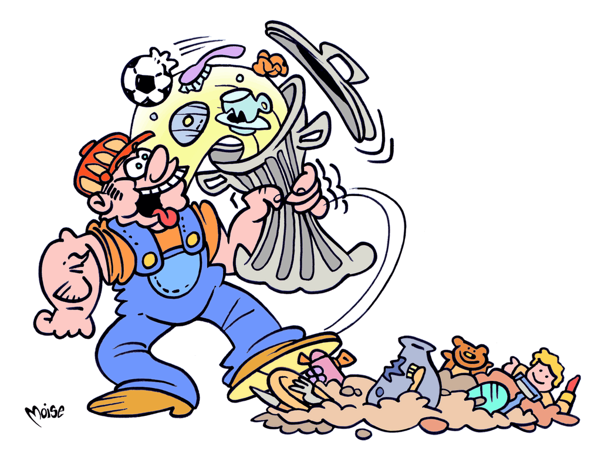
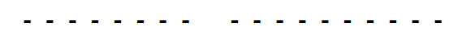

I rifiuti danno energia

Il nostro amico è come Braccio di Ferro!
Ma non ingurgita scatolette di spinaci, nè di CECI o
vari prodotti dell'ORTO. Non mangia PURÈ, nè alimenti
di altro GENERE�
Si nutre di rifiuti non differenziabili, ma in altro modo
valorizzabili e cos� ottiene un prezioso

Anagramma le parole evidenziate (CECI, ORTO,
PURÈ, GENERE) e avrai la soluzione del gioco (due
parole, una lettera per ogni trattino).